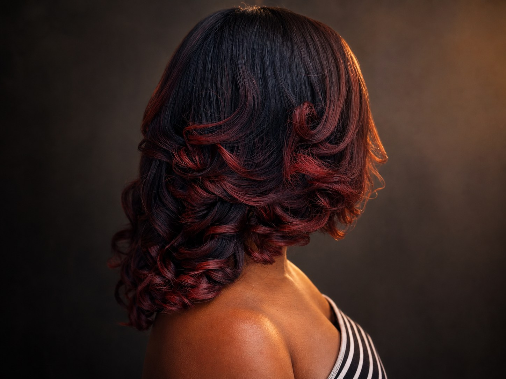
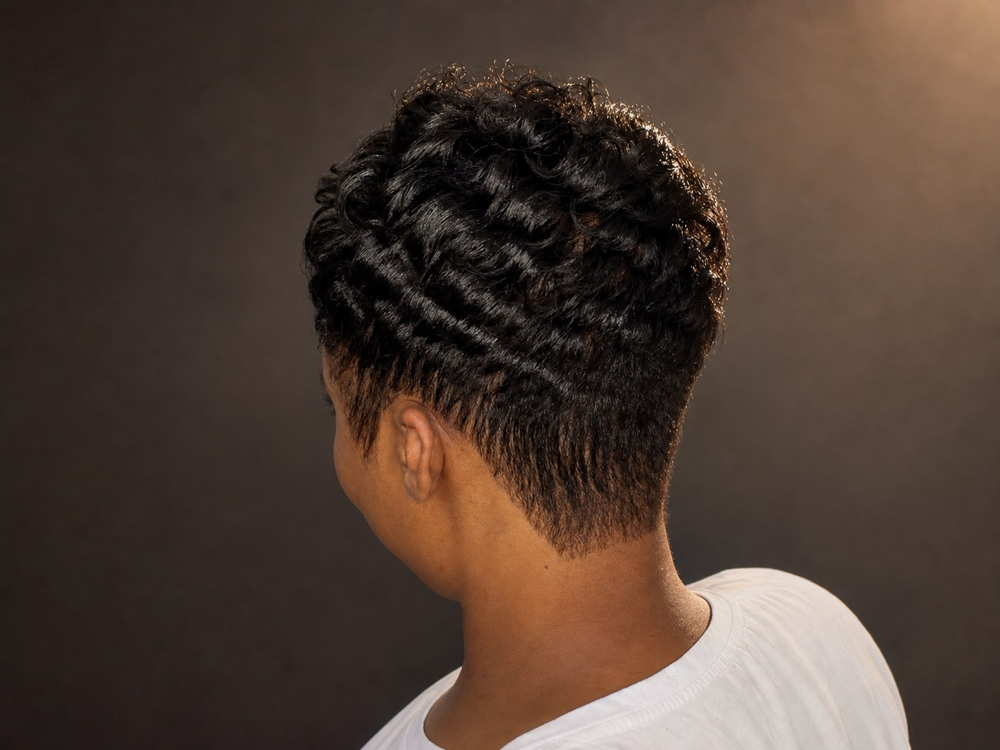

Hair color
Dimensional color designed around skin tone, maintenance goals, and the condition of the hair.
Services at Beverly's
Every service begins with the same priorities: healthy hair, clear communication, and a finish that works beyond the salon chair.

The service menu
Pricing is confirmed after Teddy understands the goal, current condition, density, length, and time required. Color corrections and custom units may require a consultation.
Dimensional color designed around skin tone, maintenance goals, and the condition of the hair.
A complete cleanse, conditioning, blowout, press, trim when needed, and a finish tailored to your look.
Added length, volume, or versatility with a plan that respects the health and maintenance of the natural hair.
Support for moisture, strength, scalp comfort, and maintenance between transformational services.
Personalized construction, fit, density, color, shape, installation, and maintenance for fashion or hair-loss needs.
Visit the wig studio ↗Fresh from Teddy's chair
The right service is the one that supports your texture, personality, schedule, and appetite for maintenance. These finished looks show the range of Teddy's work without asking every client to look the same.

Rich tone placed to come alive as the layers move.
Brightness balanced with depth so the finish stays dimensional.
Shape and separation designed around the natural curl story.

Short hair with intention, softness, and a clear silhouette.
Not sure what to request?
Send a photo and a short description by text, or request a consultation through the contact page.